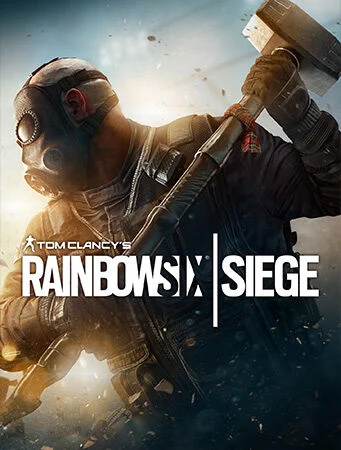

Rainbowsix:Siege is PC/Console online game.

<톰 클랜시의 레인보우 식스 시즈> (Tom Clancy's Rainbow Six Siege)는 유비소프트에서 2015년 12월 1일 스팀 판매를 개시했으며 레인보우 식스의 후속작이다. FPS 장르의 비디오 게임이다. 2015년 12월 1일, 마이크로소프트 윈도우, 플레이스테이션 4, 엑스박스 원용으로 전 세계에 출시되었다. 이 게임은 플레이어 간 협업에 초점을 두고 있다.